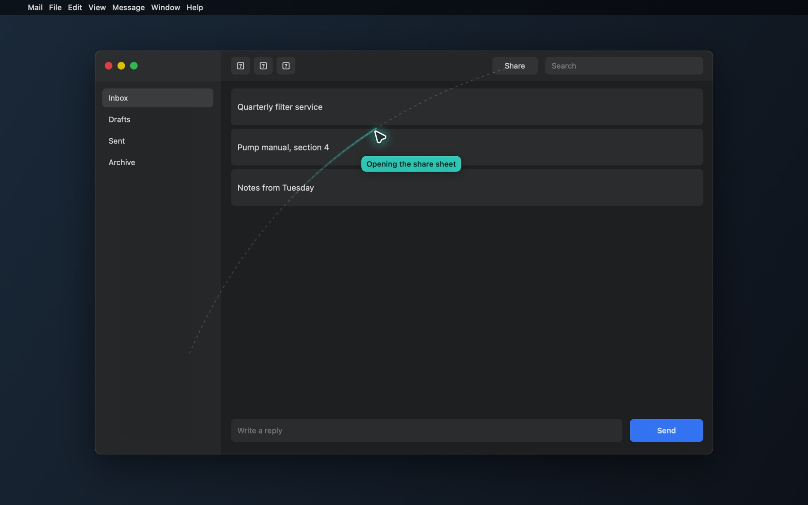
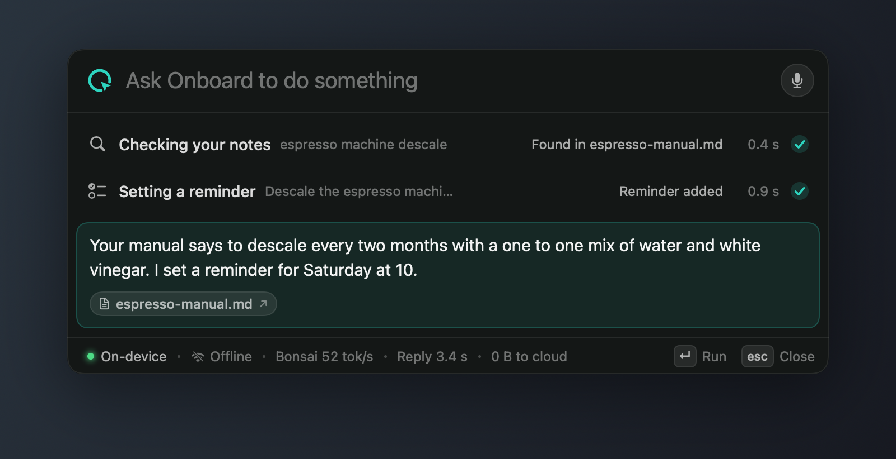
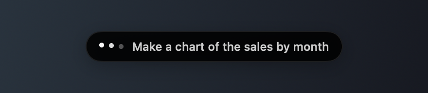

██████╗ ███╗ ██╗██████╗ ██████╗ █████╗ ██████╗ ██████╗ ██╔═══██╗████╗ ██║██╔══██╗██╔═══██╗██╔══██╗██╔══██╗██╔══██╗ ██║ ██║██╔██╗ ██║██████╔╝██║ ██║███████║██████╔╝██║ ██║ ██║ ██║██║╚██╗██║██╔══██╗██║ ██║██╔══██║██╔══██╗██║ ██║ ╚██████╔╝██║ ╚████║██████╔╝╚██████╔╝██║ ██║██║ ██║██████╔╝ ╚═════╝ ╚═╝ ╚═══╝╚═════╝ ╚═════╝ ╚═╝ ╚═╝╚═╝ ╚═╝╚═════╝
> █
# an agent with its own cursor that runs your mac by voice.
# it reads the screen, clicks and types, checks its own work. everything runs on the laptop.
// 01 the demo
under two minutes, one take. the first thing it is asked to do is turn the wifi off. everything after that happens offline.
// 02 the app
onboard shows its work. its own teal cursor moves across your screen while your pointer stays where you left it.





# the pill at the bottom of the screen: listening, thinking, speaking, done.

// 03 say it
hold fn and talk, or say "onboard" and keep your hands free. pick a request to see what happens.
// 04 how it works
assistants that can operate a computer send your screen and your voice to a data center. onboard does the same job on the laptop itself. on a plane, in a lab with no signal, or with files that cannot leave the building, it keeps working.
1. hear → whisperkit turns speech into text 2. see → the front window, read as a list of controls 3. act → one action per step, with its own cursor 4. verify → reads the result back before it says done
typed text is read back from the app. a number it never saw is refused before it is written. a request that is missing something gets a question, not a guess. an action that failed is never tried twice.
say "onboard" to start and "cancel" to stop. answers are spoken. a one minute training teaches it your voice, and after that it turns everyone else away.
// 05 the stack
bonsai 2 9b plans each step, one json action
looks at pictures of the window
judges whether the task is done
bonsai 2 2b quick answers
whisperkit hears you (large-v3 turbo)
wake word check (base.en)
speakerkit recognizes the owner's voice
ttskit speaks the answer
accessibility the screen as exact text
vision reads text from a picture when
an app exposes nothing
overlay the teal cursor, x-ray, approvals
notes folder your .md and .txt files embeddings nomic-embed-text, on device answers name the file they came from
// 06 what it can do
# in the build you can run today.
| ask for | say | what happens |
|---|---|---|
| reminder | "remind me to call the dentist tomorrow at 9" | added to reminders, in about 3 seconds |
| calendar | "add lunch with jared friday at noon" | added to your calendar, no app opened |
| type | "add a line that says pump a checked" | the cursor types it and reads it back |
| rewrite | "make this sound more professional" | your selection is replaced in place |
| notes | "what do my notes say about filter changes?" | answers from your files and names the source |
| look | "what's wrong in this chart?" | answers from a picture of the window |
| point | "where is the save button?" | the cursor goes to it |
| files | "put the screenshots into a folder called shots" | moves them after you approve |
| relay | "ask this chat what the project does" | types the question into the app in front and sends it |
| dictate | hold fn + control | your words, typed into any app |
| wifi | "turn the wifi off" | it does, and keeps working |
| cancel | "cancel" | stops the run and the voice, clears the screen |
// 07 field log
$ tail -n 9 ~/Library/Application\ Support/Onboard/runs/last.txt [request] Add a line that says Pump A checked [see ] TextEdit, window "maintenance-log.txt", 1 field [step 1 ] type(Pump A checked) 2.1 s [result ] Verified: "Pump A checked" is now in the document [verify ] Confirmed: the line is visible below "Pump B checked" [answer ] I added the line Pump A checked to your document. [turn ] 7.7 s · wifi off · 0 B to cloud [OK]